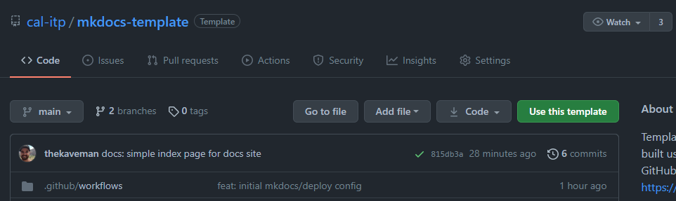
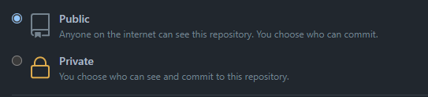

Getting started ¶
This repository serves as a GitHub template repository for Cal-ITP.
Usage ¶
Follow these steps to create a new repository that uses this repository as a template. Adapted from GitHub’s documentation.
-
On GitHub, navigate to the main page of this template repository:
https://github.com/cal-itp/mkdocs-template -
Above the file list, click Use this template 
-
Configure the new repository’s details, including the Owner (
cal-itp), Name, and Description -
Ensure the new repository’s visiblity is set to Public 
-
Ensure the checkbox to Include all branches is checked
-
Click Create repository from template to finish and create the new repository
-
IMPORTANT: review the
LICENSEfile and ensure it is appropriate for your new project. If not, update it with a more appropriate license before continuing. -
Once the new repository is ready, it’s a good idea to Find+Replace instances of
mkdocs-templatewithin the content with the name of your new repository. This ensures instructions like Running locally continue to work in the new project and content like the website name and URL are updated accordingly.
How does this work? ¶
mkdocs ¶
mkdocs turns markdown content inside the docs/ directory into HTML+CSS+JS needed for a website.
The mkdocs.yml file in the root of the repository
configures website settings and available plugins for this build process.
The docs/requirements.txt file lists the
python dependencies necessary to build the documentation using mkdocs.
GitHub Actions ¶
A GitHub Action called mhausenblas/mkdocs-deploy-gh-pages enables automated
building of new documentation content using mkdocs, whenever the content changes. Our workflow is defined in the
.github/workflows/mkdocs.yml file.
The action uses the docs/requirements.txt file to install the necessary dependencies for building the docs site.
After running mkdocs, the action redeploys the documentation site by force-pushing to the gh-pages branch.
GitHub Pages ¶
GitHub Pages serves the website from the gh-pages branch of this repository.
Cal-ITP has an Organization site repository at https://github.com/cal-itp/cal-itp.github.io. This repository contains the
root website and is served (via a CNAME) from
https://docs.calitp.org.
GitHub Pages for Organizations functions such that any repository created in the Cal-ITP Organization, with
GitHub Pages enabled, will have an automatic domain at https://docs.calitp.org/repository-name.